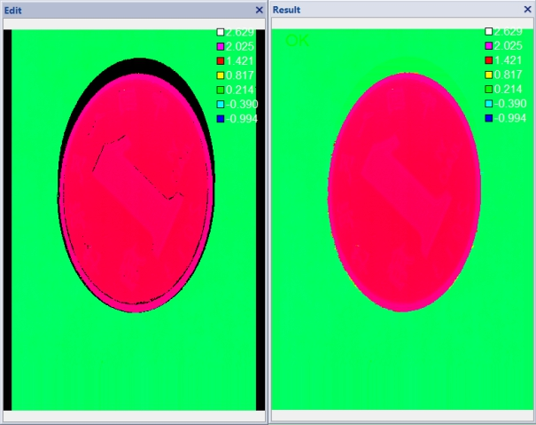
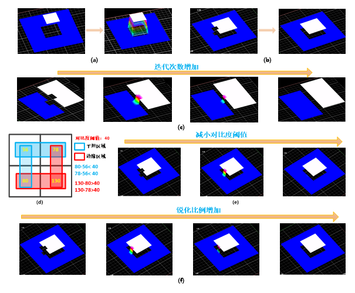

Công cụ lấp đầy pixel bị thiếu
Chức năng
Do nguyên lý tạo ảnh của camera 3D, không phải mỗi pixel trong ảnh độ sâu luôn có một giá trị độ sâu hợp lệ, tức là trong ảnh có thể tồn tại pixel bị thiếu. Công cụ lấp đầy pixel bị thiếu sẽ phân tích vùng lân cận của pixel bị thiếu hoặc toàn ảnh, tính toán một giá trị độ sâu mới để lấp đầy pixel không hợp lệ, nhằm nâng cao tính hoàn chỉnh và tính hiệu lực của toàn bộ ảnh. So sánh hiệu quả trước và sau khi xử lý của công cụ được thể hiện như hình 1.

Hình 1 Sơ đồ minh họa công cụ lấp đầy pixel bị thiếu
Tham số
| Phân loại |
Tên tham số |
Mô tả tham số |
| Cửa sổ thuộc tính |
Phương pháp lấp đầy |
Sau khi loại bỏ điểm nhiễu, sẽ lấp đầy vị trí lỗ trống sau khi loại bỏ, tham số này dùng để chỉ định phương pháp lấp đầy, chia thành ba loại: không, lấp đầy tuyến tính, lấp đầy phi tuyến. |
|
Loại ROI |
Vùng cần kiểm tra, trong đó ROI tương ứng với phương thức lấp đầy pixel bị thiếu là không và tuyến tính được chia thành 6 loại: toàn bộ ảnh, hình chữ nhật, hình chữ nhật affine, hình tròn, hình elip, đa giác. ROI tương ứng với phi tuyến được chia thành 5 loại: toàn bộ ảnh, hình chữ nhật, hình chữ nhật affine, hình tròn, hình elip. |
|
Phương pháp tính giá trị độ sâu |
Chia thành 4 loại: lớn nhất vùng lân cận, nhỏ nhất vùng lân cận, nội suy vùng lân cận, chế độ toàn cục. Có hiệu lực khi tham số lấp đầy pixel bị thiếu chọn lấp đầy tuyến tính. |
|
Hướng tìm kiếm pixel vùng lân cận |
Chia thành 3 loại: ngang, dọc, hai chiều, tức là trong chế độ vùng lân cận, phân tích các pixel hợp lệ ở hai bên theo hướng ngang hoặc hai bên theo hướng dọc hoặc hai bên theo cả hướng ngang và dọc của pixel mục tiêu. Tham số này chỉ có hiệu lực trong chế độ vùng lân cận. |
|
Phương thức tính chế độ toàn cục |
Chia thành 4 loại: lớn nhất toàn cục, nhỏ nhất toàn cục, trung bình toàn cục, giá trị cố định. Có hiệu lực khi tham số lấp đầy pixel bị thiếu chọn lấp đầy tuyến tính. |
|
Giá trị cố định chế độ toàn cục |
Tham số này chỉ có hiệu lực khi phương thức tính chế độ toàn cục chọn giá trị cố định, giá trị Z thực, phạm vi giá trị thực sẽ khác nhau tùy theo độ phân giải hướng trục Z của ảnh và offset, đơn vị: mm |
|
Cắt ảnh |
Chọn “Có”, thì cắt ảnh kết quả theo vùng ROI. |
|
Phương pháp lấp đầy phi tuyến |
Chia thành 2 loại: làm mượt và giữ biên. |
|
Số lần tính toán |
Khi lấp đầy pixel bị thiếu, số lần thuật toán cần tính toán giá trị độ sâu của pixel cần lấp đầy. Phạm vi giá trị là: [1,10000]. |
|
Chế độ lấp đầy |
Chia thành 4 loại: parabolic, perona-malik, weickert, shock. Tham số này chỉ có hiệu lực trong lấp đầy giữ biên. |
|
Bước cập nhật |
Kích thước bước cập nhật khi tính toán giá trị lấp đầy mới ở mỗi lần lặp. Phạm vi giá trị là:（0,10000]. |
|
Ngưỡng chiều cao biên |
Vùng có chênh lệch chiều cao pixel vùng lân cận lớn hơn ngưỡng được xem là biên, giá trị Z thực, phạm vi giá trị thực sẽ khác nhau tùy theo độ phân giải hướng trục Z của ảnh, đơn vị: mm |
|
Tỷ trọng lọc shock |
Tỷ lệ Shock là: khi tính kết quả lấp đầy, tỷ trọng của lọc Shock trong kết quả, phạm vi giá trị là [0,1]. |
|
Cường độ làm mượt |
Trong quá trình lấp đầy ảnh độ sâu, cường độ lọc làm mượt ảnh, nhiễu trong ảnh càng lớn thì cường độ làm mượt tương ứng cần tăng lên. Phạm vi giá trị là（0,20）. |
| Cửa sổ ảnh |
Ảnh độ sâu |
Hiển thị ảnh độ sâu cần kiểm tra, hiển thị dưới dạng ảnh giả màu. |
|
Vùng kiểm tra |
Hiển thị vùng cần kiểm tra trên ảnh. |
| Liên kết dữ liệu |
Ảnh độ sâu đầu vào |
Nhập ảnh độ sâu cần kiểm tra. |
|
Biến đổi tuyến tính 2D |
Phép biến đổi tịnh tiến, xoay, co giãn của mục tiêu so với mẫu. |
| Giao diện nâng cao |
Không |
Không |
Đầu ra
| Phân loại |
Mô tả tham số |
| Ảnh độ sâu đầu ra |
Xuất ảnh độ sâu sau khi lấp đầy |
| Kết quả thực thi |
Kết quả thực thi công cụ |
| Thời gian thực thi |
Thời gian thực thi công cụ |
Mô tả chi tiết
1. Mô tả tham số lấp đầy tuyến tính
Bản chất của lấp đầy tuyến tính là phân tích các pixel hợp lệ vùng lân cận của pixel bị thiếu hoặc pixel toàn ảnh, để tính giá trị độ sâu cho pixel bị thiếu. Vì vậy, phương thức tính giá trị độ sâu có thể chia thành chế độ vùng lân cận và chế độ toàn cục.
Chế độ vùng lân cận: Tính giá trị độ sâu của pixel bị thiếu bằng cách phân tích các pixel vùng lân cận của pixel bị thiếu. Cụ thể, chế độ vùng lân cận gồm ba chế độ: lớn nhất vùng lân cận, nhỏ nhất vùng lân cận, nội suy vùng lân cận. Trong đó, lớn nhất vùng lân cận/nhỏ nhất vùng lân cận lấy giá trị độ sâu lớn nhất/nhỏ nhất trong phạm vi vùng lân cận của pixel bị thiếu làm kết quả xử lý. Nội suy vùng lân cận thực hiện nội suy tuyến tính dựa trên vị trí và độ sâu của các pixel vùng lân cận.
Chế độ toàn cục: Tính giá trị độ sâu của pixel bị thiếu bằng cách phân tích tất cả pixel hợp lệ trong toàn ảnh, gồm bốn phương pháp: lớn nhất toàn cục, nhỏ nhất toàn cục, trung bình toàn cục và giá trị cố định. Lớn nhất toàn cục/nhỏ nhất toàn cục/trung bình toàn cục dùng giá trị pixel hợp lệ lớn nhất/nhỏ nhất/trung bình của toàn ảnh để lấp đầy tất cả pixel không hợp lệ. Phương pháp giá trị cố định dùng giá trị do người dùng nhập để lấp đầy pixel bị thiếu.
2. Mô tả tham số lấp đầy phi tuyến

Hình 4 Sơ đồ tham số lấp đầy phi tuyến
Phương pháp lấp đầy: Phương pháp lấp đầy mà công cụ lấp đầy phi tuyến pixel bị thiếu sử dụng, hiện gồm hai phương thức: lấp đầy làm mượt và lấp đầy giữ biên. Đúng như tên gọi, lấp đầy làm mượt nghĩa là trong quá trình lấp đầy pixel bị thiếu, giá trị độ sâu của pixel chuyển tiếp mượt mà, phù hợp để lấp đầy pixel bị thiếu ở vùng phẳng; lấp đầy giữ biên thì trong quá trình lấp đầy có thể giữ lại tốt thông tin biên của vật thể. Sơ đồ cụ thể được thể hiện như hình 4(a) và 4(b).
Chế độ lấp đầy: Một số chế độ lấp đầy trong phương pháp lấp đầy giữ biên, chủ yếu gồm: Parabolic, Parabolic Mailk, Weickert, Shock và các chế độ lấp đầy khác.
Số lần tính toán: Khi lấp đầy pixel bị thiếu, cần tính toán nhiều lần giá trị độ sâu của pixel cần lấp đầy. Như hình 4©, khi số lần tính toán tăng lên, hiệu quả lấp đầy pixel bị thiếu liên tục được cải thiện.
Bước cập nhật: Kích thước bước cập nhật khi tính toán giá trị lấp đầy mới ở mỗi lần lặp.
Ngưỡng chiều cao biên（tên cũ: ngưỡng tương phản）Vùng có chênh lệch chiều cao pixel vùng lân cận lớn hơn ngưỡng được xem là biên. Hình 4(d) thể hiện một kết quả phân chia vùng phẳng và vùng biên khi ngưỡng chiều cao biên được đặt là 40. Cần lưu ý rằng một pixel vừa có thể tạo thành vùng phẳng với pixel vùng lân cận của nó, vừa đồng thời có thể tạo thành vùng biên với các pixel vùng lân cận khác. Ví dụ: trong hình 4(d), giá trị gradient giữa 56 và 78 là 28, nhỏ hơn ngưỡng chiều cao biên, lúc này pixel tương ứng với 56 và pixel tương ứng với 78 tạo thành vùng phẳng; đồng thời, giá trị gradient giữa 78 và 130 là 52, lúc này pixel tương ứng với 78 và pixel tương ứng với 130 tạo thành vùng biên.
Như hình 4(e), đây là quan hệ tương đối giữa ngưỡng chiều cao biên và hiệu quả giữ biên trong vùng lấp đầy: nói chung, khi ngưỡng chiều cao biên giảm, hiệu quả giữ biên có thể được cải thiện.
Tỷ trọng lọc shock（tên cũ: tỷ lệ làm sắc nét）:Trong chế độ lấp đầy Shock, giá trị lấp đầy pixel bị thiếu được tính bằng cách cộng theo tỷ lệ giữa giá trị lọc làm mượt của ảnh và giá trị lọc Shock. Tỷ lệ Shock là: trong kết quả lấp đầy, tỷ trọng của lọc Shock, phạm vi giá trị là [0, 1]. Nếu tỷ lệ Shock bằng 0, nghĩa là kết quả lấp đầy được tính bằng lọc làm mượt ảnh; nếu tỷ lệ Shock bằng 1, nghĩa là kết quả lấp đầy được tính bằng lọc Shock. Tham số này chỉ được thiết lập trong chế độ Shock của phương pháp lấp đầy giữ biên. Hình 4(f) thể hiện quan hệ tương đối giữa tỷ lệ Shock và hiệu quả giữ biên trong vùng lấp đầy: nói chung, khi tỷ lệ Shock tăng, hiệu quả giữ biên có thể được cải thiện.
Cường độ làm mượt: Trong quá trình lấp đầy ảnh độ sâu, cường độ lọc làm mượt ảnh, nhiễu trong ảnh càng lớn thì cường độ làm mượt tương ứng cần tăng lên.
3. Hướng dẫn sử dụng
Step 1 Thiết lập tham số lấp đầy
Phương pháp lấp đầy được chia thành 3 loại: không lấp đầy, lấp đầy tuyến tính, lấp đầy phi tuyến.
Không lấp đầy: Sau khi loại bỏ điểm nhiễu nhô lên, không thực hiện bất kỳ lấp đầy nào, chỉ xuất ảnh độ sâu sau khi đã loại bỏ điểm nhiễu nhô lên.
Lấp đầy tuyến tính: Sau khi loại bỏ điểm nhiễu nhô lên, sử dụng phương pháp lấp đầy tuyến tính để lấp đầy, và xuất ảnh độ sâu sau khi lấp đầy.
- Các tham số cần thiết lập chủ yếu là tham số phương pháp tính giá trị độ sâu（lấy lớn nhất vùng lân cận làm ví dụ, dùng giá trị lớn hơn ở hai đầu của pixel bị thiếu để lấp đầy）, phương pháp tìm kiếm pixel vùng lân cận （lấy hướng ngang làm ví dụ: lấp đầy theo hướng X nằm ngang của ảnh）, phương pháp tính chế độ toàn cục（lớn nhất toàn cục: lấp đầy bằng giá trị lớn nhất của ảnh; giá trị cố định: lấp đầy theo giá trị cố định đã thiết lập）.
Lấp đầy phi tuyến: Sau khi loại bỏ điểm nhiễu nhô lên, sử dụng phương pháp lấp đầy phi tuyến để lấp đầy, và xuất ảnh độ sâu sau khi lấp đầy.
Các tham số cần thiết lập:
Nếu phương pháp lấp đầy được đặt là lấp đầy làm mượt, lúc này chỉ cần thiết lập tham số số lần tính toán;
Nếu phương pháp lấp đầy là lấp đầy giữ biên, cần thiết lập các tham số như số lần tính toán, bước cập nhật, cường độ làm mượt, ngưỡng chiều cao biên, tỷ lệ làm sắc nét:
Bước thứ nhất: chọn chế độ lấp đầy: Một số chế độ lấp đầy trong phương pháp lấp đầy giữ biên, chủ yếu gồm: Parabolic, PeronaMailk, Weickert, Shock và các chế độ lấp đầy khác. Đặc điểm của một số chế độ và tình huống áp dụng có thể tham khảo bảng bên dưới.
Bước thứ hai: bước cập nhật: Kích thước bước cập nhật khi tính toán giá trị lấp đầy mới ở mỗi lần lặp.Bước cập nhật mặc định là 1, thông thường chỉ cần tăng bước cập nhật đến 10 là được;
Bước thứ ba: số lần tính toán: Trước tiên đặt số lần tính toán ở giá trị tương đối lớn, như 5000, 10000, để đảm bảo khi tinh chỉnh tham số sau đó, hiệu quả không bị ảnh hưởng do số lần tính toán không đủ dẫn đến không đạt hiệu quả lấp đầy.
Bước thứ tư: cường độ làm mượt: Trong quá trình lấp đầy ảnh độ sâu, cường độ lọc làm mượt ảnh, nhiễu trong ảnh càng lớn thì cường độ làm mượt tương ứng cần tăng lên.Trong chế độ Shock, cường độ làm mượt thông thường được đặt là 3, tùy theo hiệu quả lấp đầy thực tế, nếu kết quả lấp đầy của vùng cần lấp đầy xuất hiện vùng dạng khối lớn, cần tăng cường độ làm mượt;trong các chế độ Parabolic, Parabolic Mailk và Weickert, cường độ làm mượt thông thường được đặt nhỏ hơn 1, tùy theo chất lượng ảnh độ sâu thu được và kết quả lấp đầy thực tế（kết quả lấp đầy của vùng cần lấp đầy xuất hiện vùng dạng khối lớn）, lúc này có thể tăng cường độ làm mượt phù hợp.
Bước thứ năm: ngưỡng chiều cao biên（tên cũ: ngưỡng tương phản）Vùng có chênh lệch chiều cao pixel vùng lân cận lớn hơn ngưỡng được xem là biên. Hình trên (d) thể hiện một kết quả phân chia vùng phẳng và vùng biên khi ngưỡng chiều cao biên được đặt là 40. Cần lưu ý rằng một pixel vừa có thể tạo thành vùng phẳng với pixel vùng lân cận của nó, vừa đồng thời có thể tạo thành vùng biên với các pixel vùng lân cận khác. Ví dụ: trong hình trên (d), giá trị gradient giữa 56 và 78 là 28, nhỏ hơn ngưỡng chiều cao biên, lúc này pixel tương ứng với 56 và pixel tương ứng với 78 tạo thành vùng phẳng; đồng thời, giá trị gradient giữa 78 và 130 là 52, lúc này pixel tương ứng với 78 và pixel tương ứng với 130 tạo thành vùng biên.
Trong dự án thực tế, ngưỡng chiều cao biên cần được tinh chỉnh nhiều lần mới có thể đạt được giá trị cần thiết. Có thể dựa vào hiệu quả để biết tham số quá lớn hay quá nhỏ, ngưỡng quá lớn sẽ xuất hiện hiệu quả như hình bên trái, phần biên bị sụp hoặc dính quá mức; ngưỡng quá nhỏ sẽ xuất hiện hiện tượng như hình bên phải, xuất hiện nhiều lớp biên.


Việc thiết lập ngưỡng chiều cao biên cần được xác định theo chênh lệch gradient biên, cụ thể có thể tham khảo định nghĩa của ngưỡng chiều cao biên;nói chung, khi ngưỡng chiều cao biên giảm, hiệu quả giữ biên có thể được cải thiện, như hình trên (e).
Bước thứ năm: tỷ trọng lọc shock（tên cũ: tỷ lệ làm sắc nét）:Trong chế độ lấp đầy Shock, giá trị lấp đầy pixel bị thiếu được tính bằng cách cộng theo tỷ lệ giữa giá trị lọc làm mượt của ảnh và giá trị lọc Shock. Tỷ trọng lọc Shock là: trong kết quả lấp đầy, tỷ trọng của lọc Shock, phạm vi giá trị là [0, 1]. Nếu tỷ trọng lọc Shock bằng 0, nghĩa là kết quả lấp đầy được tính bằng lọc làm mượt ảnh; nếu tỷ trọng lọc Shock bằng 1, nghĩa là kết quả lấp đầy được tính bằng lọc Shock. Tham số này chỉ được thiết lập trong chế độ Shock của phương pháp lấp đầy giữ biên. Như hình trên (f), đây là quan hệ tương đối giữa tỷ lệ Shock và hiệu quả giữ biên trong vùng lấp đầy: nói chung, khi tỷ trọng lọc Shock tăng, hiệu quả giữ biên có thể được cải thiện.
Bước thứ sáu: số lần tính toán: Từ từ giảm số lần tính toán xuống, giảm thời gian xử lý của công cụ với điều kiện không ảnh hưởng đến hiệu quả xử lý.
Bảng dưới đây là đặc điểm và tình huống áp dụng của một số phương pháp trong lấp đầy giữ biên, người dùng có thể chọn phương pháp theo hiệu quả lấp đầy cuối cùng cần đạt được.
| Phương pháp lấp đầy |
Chế độ lấp đầy |
Đặc điểm phương pháp |
Tình huống áp dụng |
| Lấp đầy làm mượt |
Lấp đầy làm mượt |
Kết quả lấp đầy chuyển tiếp mượt mà với các pixel xung quanh |
Phù hợp để lấp đầy pixel bị thiếu trong vùng phẳng, bao gồm vùng ngang và vùng nghiêng, v.v. Cần thiết lập số lần lặp, thông thường đặt khoảng 200-1000 tùy theo kích thước vùng. |
| Lấp đầy giữ biên |
Parabolic |
Kết quả lấp đầy có thể làm giảm quá trình chuyển tiếp mượt của pixel bị thiếu tại biên, nhưng không thể loại bỏ hoàn toàn hiệu ứng làm mượt |
Khuyến nghị ưu tiên sử dụng chế độ Shock và chế độ Parabolic Mailk để lấp đầy ảnh độ sâu |
|
Parabolic Mailk |
Kết quả lấp đầy có thể cơ bản loại bỏ hiệu ứng làm mượt của pixel bị thiếu tại biên ảnh. Thời gian xử lý tương đối ngắn hơn Weickert |
Phù hợp để lấp đầy pixel bị thiếu trong vùng biên, trong đó vùng biên có thể nằm bên trong vùng ngang hoặc bên trong vùng nghiêng. Chế độ này cần thiết lập các tham số như số lần lặp, bước lặp, ngưỡng chiều cao biên, cường độ làm mượt |
|
Weickert |
Kết quả lấp đầy có thể cơ bản loại bỏ hiệu ứng làm mượt của pixel bị thiếu tại biên ảnh. Thời gian xử lý tương đối dài hơn PM |
Phù hợp để lấp đầy pixel bị thiếu trong vùng biên, trong đó vùng biên có thể nằm bên trong vùng ngang hoặc bên trong vùng nghiêng. Chế độ này cần thiết lập các tham số như số lần lặp, bước lặp, ngưỡng chiều cao biên, cường độ làm mượt |
|
Shock |
Kết quả lấp đầy có thể loại bỏ khá tốt hiệu ứng làm mượt của pixel bị thiếu tại biên ảnh |
Phù hợp để lấp đầy pixel bị thiếu trong vùng ngang（bao gồm vùng phẳng và vùng biên）. Nhưng không phù hợp để lấp đầy pixel bị thiếu tồn tại trong vùng nghiêng. Chế độ này cần thiết lập các tham số như số lần lặp, bước lặp, ngưỡng chiều cao biên, cường độ làm mượt |
Step 2 Thiết lập ROI
Thực hiện lấp đầy pixel bị thiếu trong vùng quan tâm.
Step 3 Thực thi công cụ và xuất kết quả
Sau các bước trên, có thể thực thi công cụ và nhận được ảnh độ sâu sau xử lý.
Chú ý
Không
Dự án mẫu
Tham khảo “\Samples\3D\深度图\3D测量工具.gvp”.